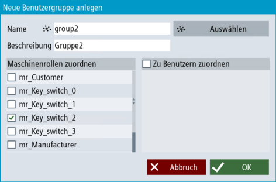

Einleitung
Wenn Sie eine neue zentrale Benutzergruppe anlegen möchten, können Sie den Dialog "Zentrale Benutzergruppe anlegen" nutzen.
|
Hinweis
|
Zentrale Benutzergruppen repräsentieren nur die gleichnamigen Benutzergruppen auf der zentralen Benutzerverwaltung.
Dies wird benötigt, um Maschinenrollen des lokalen Systems zentralen Benutzergruppen zuzuweisen. Sie können diese Gruppen nicht verwenden, um die Konfiguration der zentralen Benutzerverwaltung anzuzeigen/zu verwalten.
|
Voraussetzung
Vorgehensweise
-
Im Bedienbereich "Inbetriebnahme" rufen Sie die Benutzerverwaltung über die Softkeys "Security > Benutzerverwaltung" auf.
-
Klicken Sie auf den Softkey "Benutzergruppen". Klicken Sie auf der Übersichtsseite auf "+ Benutzergruppe", um eine neue zentrale Benutzergruppe anzulegen. Ein Pop-Up Dialog öffnet sich.

Neue zentrale Benutzergruppe anlegen
-
Klicken Sie auf "Auswählen", um einen Namen für die zentrale Benutzergruppe vom zentralen UMC-Server auszuwählen. Bestätigen Sie die Auswahl mit "Ok".
-
Wenn Sie bereits Maschinenrollen angelegt haben, wählen Sie eine oder mehrere Maschinenrolle(n) aus, welcher die zentrale Benutzergruppe zugeordnet werden soll.
Die Mitglieder dieser Benutzergruppe bekommen den höchsten AccessLevel dieser Maschinenrolle(n). Falls der Benutzergruppe keine Maschinenrollen zugewiesen werden, haben die Mitglieder der Benutzergruppe keine Rechte (Keyswitch0).
-
Wenn Sie bereits zentrale Benutzer hinterlegt haben, wählen Sie Benutzer aus, die Mitglied dieser zentralen Benutzergruppe sind.
-
Klicken Sie auf "OK", um die neue zentrale Benutzergruppe in die Liste der Benutzergruppen zu übernehmen. Legen Sie bei Bedarf weitere zentrale Benutzergruppen an, indem Sie die Schritte 2-6 wiederholen.
|